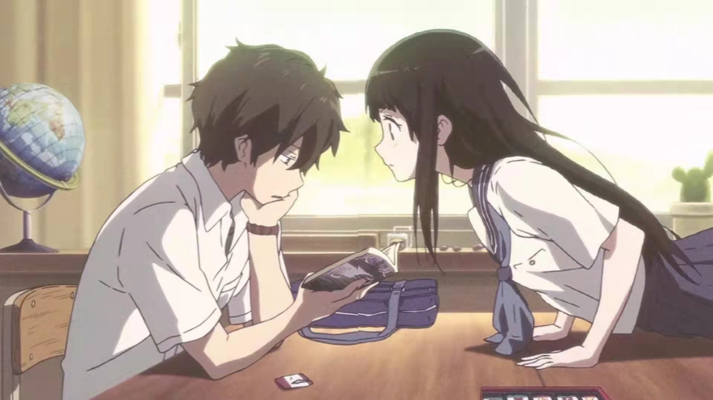

从深中街18号到学院路38号，只为遇见更秃的你——
改编自日本推理小说家米泽穗信原作的《古典部系列》小说，以该系列的第1部《冰菓》为标题。 以节能为座右铭的高中生折木奉太郎,为一个小小的原因而加入了濒临废社的“古典文学部”。 古典文学部的社员，包括他在社里认识的好奇宝宝，也就是女主角千反田爱瑠，还有他从国中就认识的伊原摩耶花和福部里志。这是他们四人以神山高中为舞台，对一桩桩事件展开推理的青春学园推理剧。“我很好奇！”奉太郎平静的灰色高中生活，因为千反田的这一句话而为之一变！
节能主义yyds樱花树下最文艺的告白from冰菓